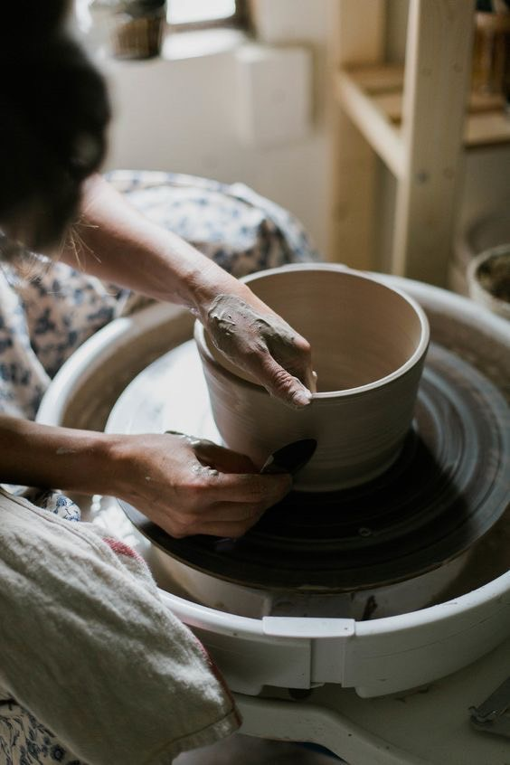

陶的故事
December 6, 2023

臺灣陶瓷的起源很早，六、七千年前新石器時代大岔坑文化遺址中就出土了許多陶片，後來的在許多文化遺址中，陶器都是最重要出土文物。臺東卑南史前博物館和臺北八里十三行遺址博物館都有豐富的史前出土陶瓷的典藏與展示品。位於台灣臺北市外雙溪故宮博物院對面的順益原住民博物館、臺灣大學考古人類學系以及中央研究院歷史語言研究所都有很豐富的原住民陶器典藏。明鄭時代諮議參軍陳永華教民燒瓦，臺南已經有製陶的紀錄，現在歸仁鄉也有早期陶器的發掘出土，臺南成為漢人在臺灣最早製陶的地方。清代嘉慶年間，南投開始製造帶釉陶器，鶯歌也開始發展陶業，道光年間臺灣的製陶業已經相當普及。清代以來臺灣陶瓷承襲著福州、泉州和漳州製陶的傳統，以木製模型壓印磚瓦，以包仔窯燒造；以手工轆轤製作陶器，利用蛇窯燒陶。製品除了紅瓦厝用的傳統磚瓦之外，主要為日用的水缸、陶甕、陶罐等陶器。這類陶器製作方法延續到戰後還在運作之中。現在從苗栗到臺中、南投、臺南、高雄乃至臺東都還有很多包仔窯與蛇窯遺蹟留下來。民間老房子屋簷牆腳下放置水缸、陶甕，驗證了過去的陶瓷文化。
日本人統治臺灣之後，引進日本傳統與現代的製陶技術和陶瓷製品。建築陶瓷方面引進了日本傳統的黑瓦，使用在寺廟與一般住家、宿舍，有別於臺灣傳統的紅磚紅瓦建築。此外，為了官方廳舍與基礎建設的需要，引進日本傳統的登窯與俗稱「八卦窯」的霍夫曼輪窯，以機械加工技術製作紅磚。紅磚的應用使臺灣建築呈現東洋與西洋並存的風格...查看更多